Portafolio · 26 fotografías
Trabajo seleccionado
Una selección de los últimos años. Pulsa cualquier foto para verla a pantalla completa; puedes pasar con las flechas del teclado o deslizando en el móvil.
Todo26 Retratos4 Bodas5 Calle5 Paisaje5 Producto4 Arquitectura3
Marc, 24 Retratos Laia y Pau, al anochecer Bodas Pasillo naranja Calle Niebla en los Pirineos Paisaje Collar de perlas Producto Silencio Retratos Chimeneas de La Pedrera Arquitectura Los anillos Bodas Túnel Calle Acantilado, larga exposición Paisaje 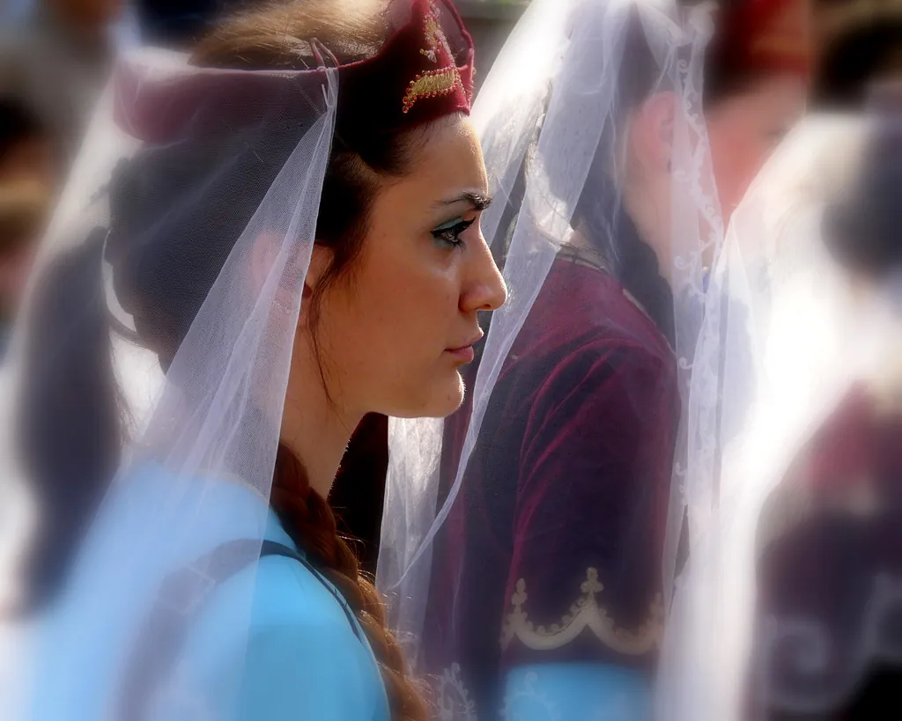
Velo Retratos 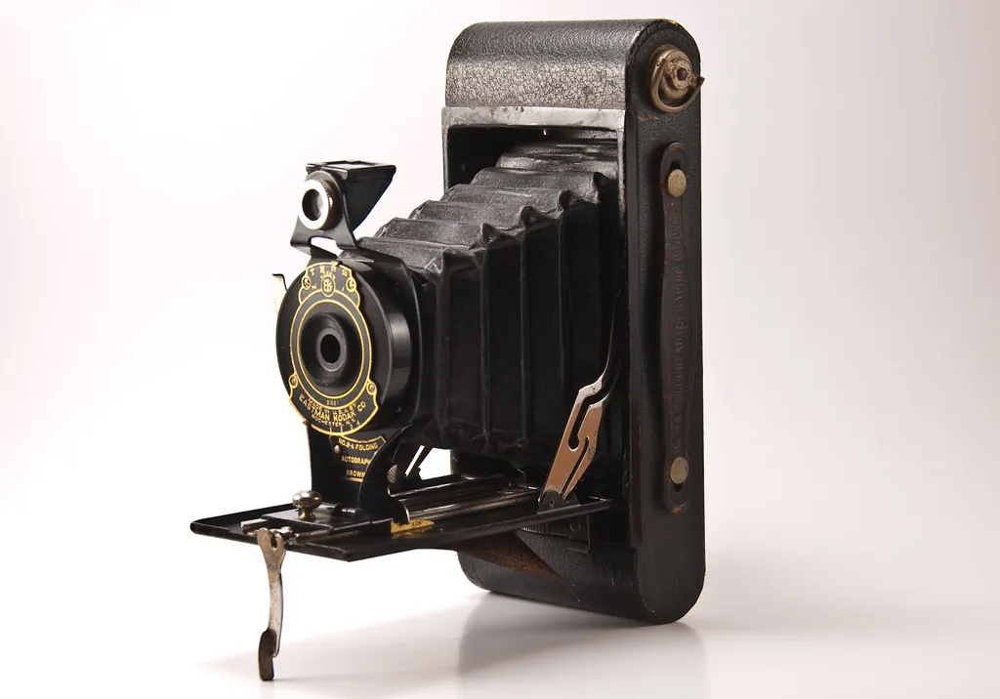
Kodak de fuelle Producto Novia en las rocas Bodas Gran estación Calle 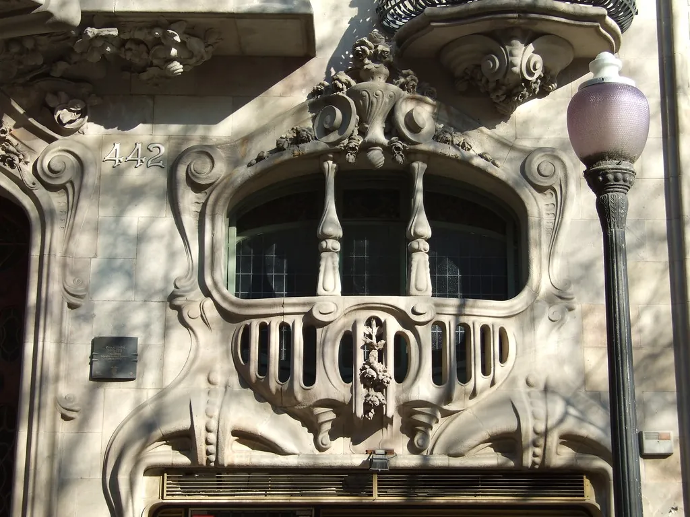
Balcón modernista Arquitectura Rayos sobre la sierra Paisaje 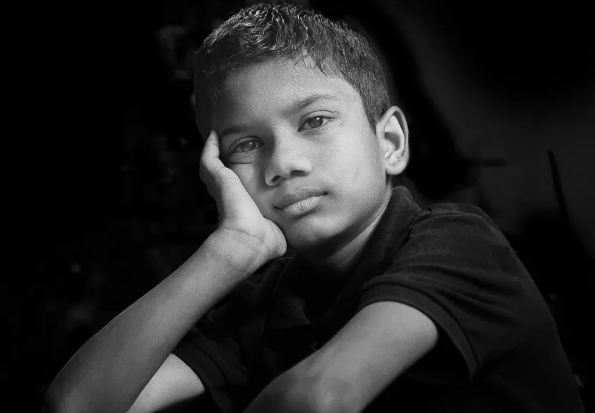
Nil Retratos 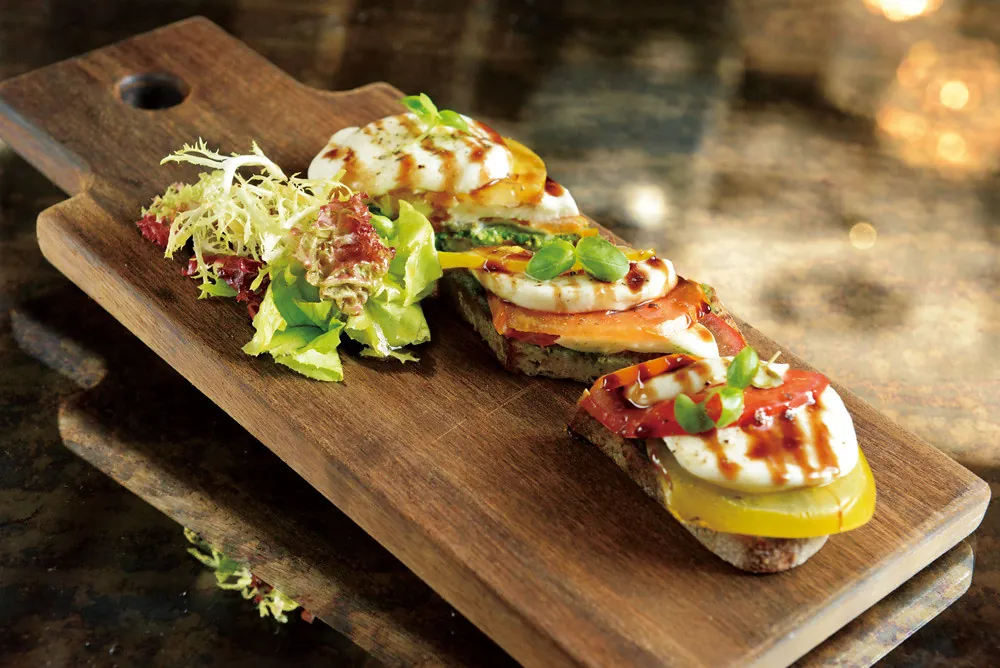
Tostas para Kabrera Producto 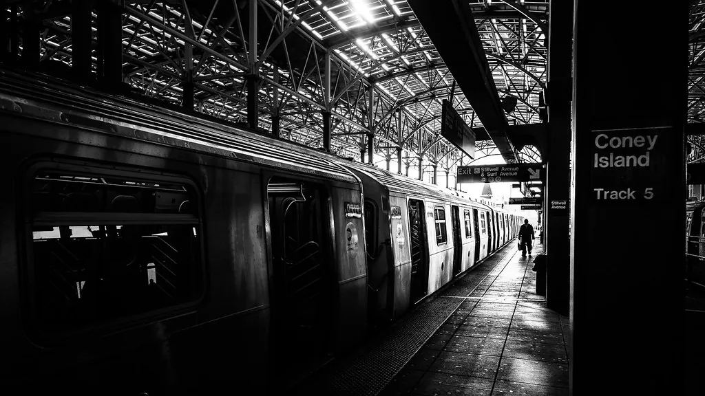
Coney Island, vía 5 Calle 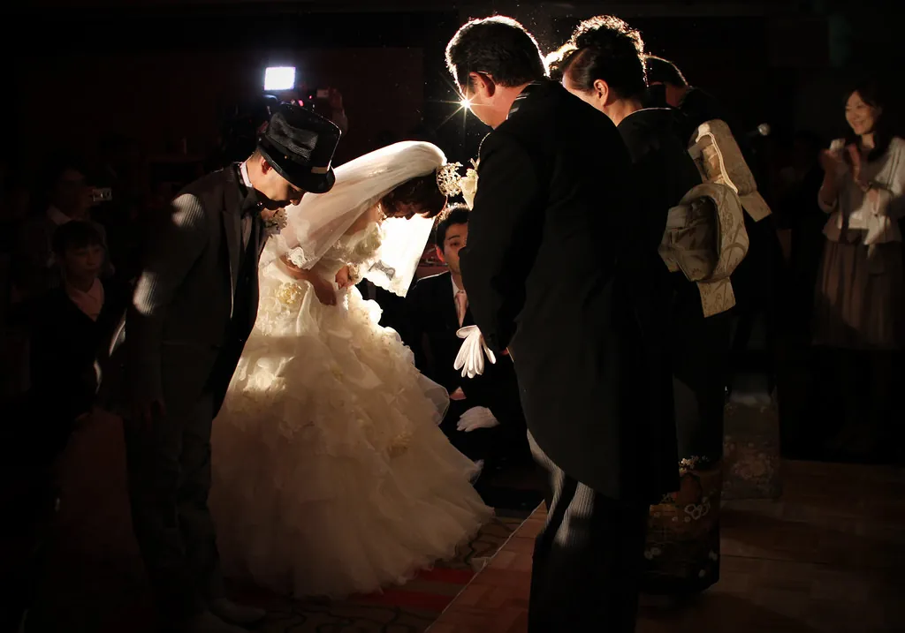
El primer baile Bodas 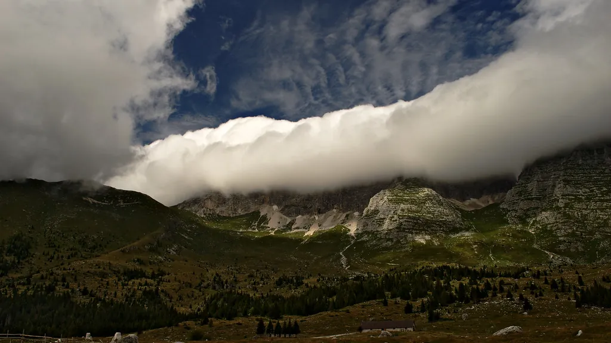
La ola de nubes Paisaje 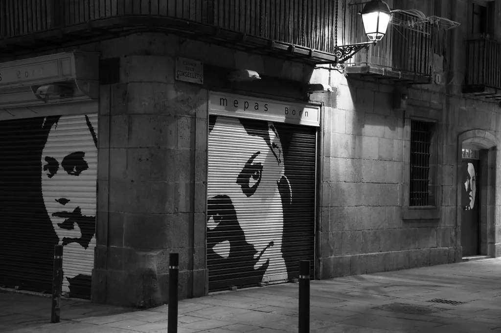
Persianas del Raval Calle 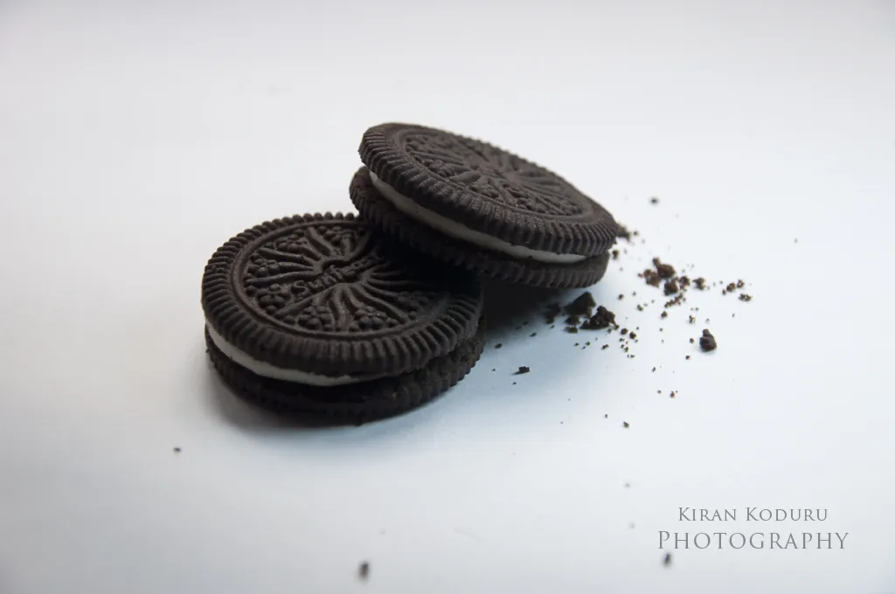
Galletas Producto 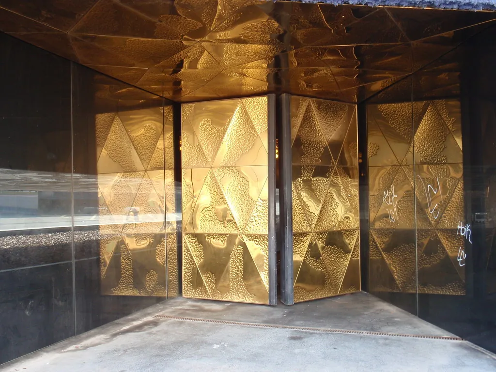
Puertas doradas Arquitectura 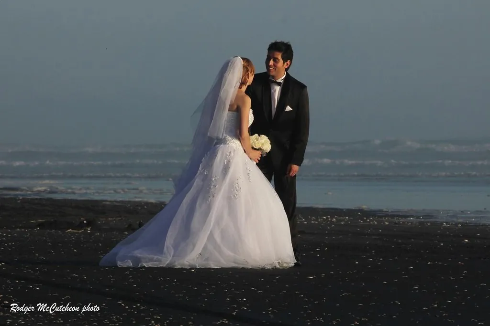
Orilla Bodas 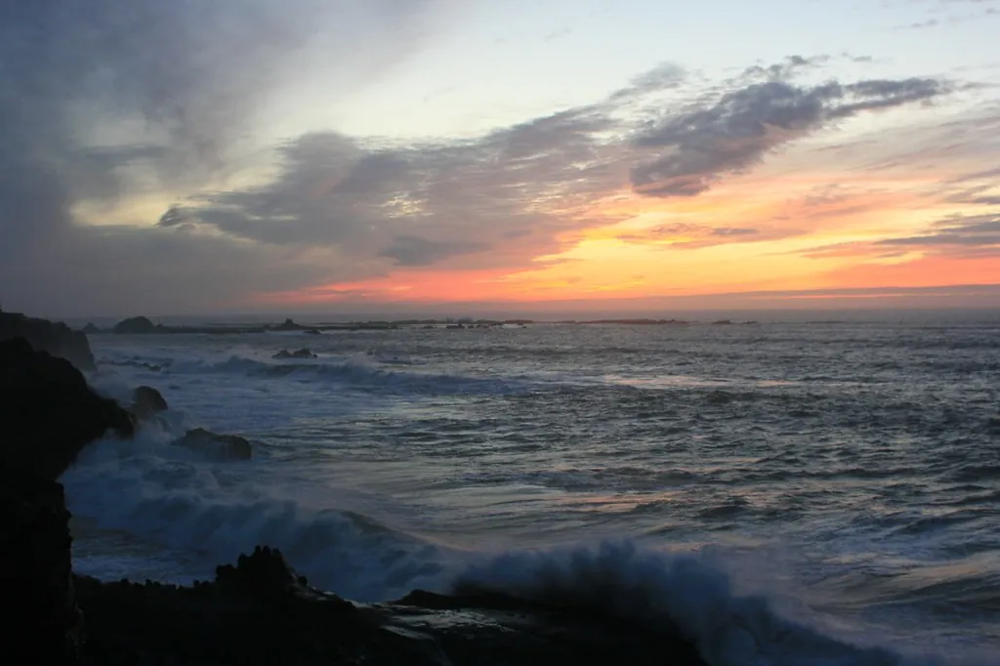
Tormenta en la Costa Brava Paisaje
01 / 26 ×
←
→
—